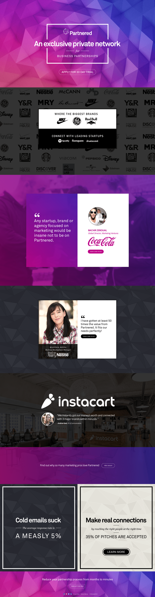

-
Company
Partnered
-
Role
Chief Product Officer
-
Year
2015
Executive Summary:
I took a promising but rough prototype & turned it into a premium paid product.
Executive Summary:
I took a promising but rough prototype & turned it into a premium paid product.
Partnered is an exclusive private network for companies to meet and plan advertising partnerships. It's where big brands like Coca-Cola can propose projects with hot startups like Lyft.
My assessment was that people were interested enough to try the product but weren't excited enough to come back, due to a confusing and boring design.
When I joined, they had a free prototype with a lot of signups of highly desirable companies but practically no repeat engagement metrics, showing that they had an interesting value proposition that the product wasn't fulfilling.
My work unfolded in three phases:
Immediately after joining, my first priority was to overhaul the free prototype and relaunch it as a paid product at SXSW. The team cranked in an all-out 3 week sprint to completely redesign the app from top to bottom.
In Austin, we hosted our own event with panelists from our user base and I gave product demos to VIP guests that we targeted in advance.
The relaunch was a success and we had our first paid customers shortly after returning from Austin.
The logged-in view of the network

The mobile layout for a typical post page

Product tour page

Announcement of our SXSW event

After the relaunch, we continuted to iterate on features and look for usage patterns with our new customers.
What I observed is that we had mainly single seat users and not many teams.
Our individual-centric features (like posts and pitches) had good traction, but we saw almost no usage of the ones we'd developed specifically for groups of multiple users.
So I added a research project to get to know our largest customer, an advertising agency. I met their team leader every week for several months and did a deep dive to learn about their needs.
What I uncovered was that it took too much organizational change to incorporate our product into their existing marketing campaigns, hindering a larger company-wide adoption.
The solution was to redesign a little-used feature called partnerships, turning it into a vendor database to help track complicated customer relationships.
An example of using partnerships as an internal CRM

An earlier prototype with stronger delineations between relationships on and off the Partnered network

This is the cutting room floor - a random assortment of fun experiments that didn't make it to production.
Variation of the home page that emphasized the customer testimonials rather than product features
An early prototype of the home page emphasizing startup founders, as well as signup for the newsletter

Our in-person events at SXSW and Cannes went so well that we toyed with the idea of hosting our own conference

One radical idea was to open up the exclusive invite-only network so that anyone could preview it in a limited way

These mini tutorials during onboarding were a way to try a more playful visual design

This project was an important business milestone for me. After years of working at startups, I'd only worked at B2B companies that already had customers or free consumer ones that ran on advertising.
Partnered was the first time I designed something that got its initial paying customers.
The responsibilities of being CPO also gave me personal insights into what my leadership style was. I was especially influenced by Ed Catmull's book on Pixar and the role that difficult crises can play, if you treat them as teachable moments that highlight company values and write down a shared playbook of how to avoid similar situations.
Thank you for reading! Email me at alabut@gmail.com or call my cell at 858-603-1820 if you have any questions.